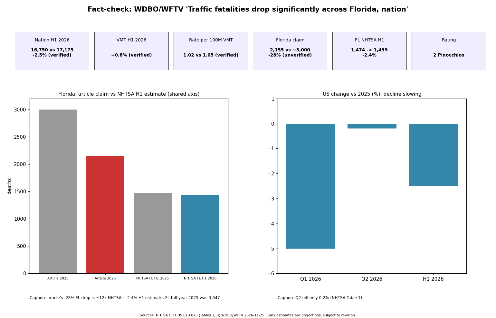

The national numbers are accurate; the Florida headline number is not supported. NHTSA projects 16,750 US deaths in H1 2026 vs 17,175 (-2.5%), VMT +0.8%, rate 1.02 vs 1.05. But NHTSA's Florida H1 estimate is 1,474 to 1,439 (-2.4%), while the article reports 2,155 vs nearly 3,000 (-28%).
Would change conclusion: access to the NHTSA FARS state query showing 2,155 as a like-for-like count.
| Claim | Verdict | Confidence |
|---|---|---|
| US H1 16,750 vs 17,175, -2.5% | True (projection) | High |
| VMT +0.8%, rate near record low | True | High |
| Florida 2,155 vs ~3,000 | Unsupported, implausible | Medium |
| Six-county 550 to 375 | Not checkable here | - |
| Federal focus on reckless/impaired driving | Not checkable here | - |